|
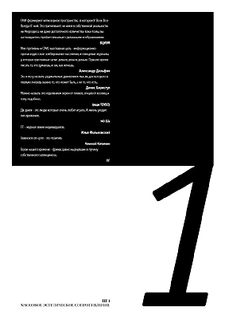
|
ОНИ формируют иллюзорное пространство, в котором У-Всех-Все-Всегда-О`кей.
Это притягивает: не имея в собственной реальности ни Мерседеса, ни даже
достаточного количества Кока-Колы, вы наслаждаетесь профессионально сделанными
изображениями.
ВЦИУМ
Мне противны и СМИ, чья главная цель - информационно-пропагандистское
зомбирование населения, и глянцевые журналы, у которых три главные цели:
деньги, деньги, деньги. Пришло время писать то, что думаешь, и так, как
хочешь.
Александр Дельфин
Это я могу назвать радикальным движением мысли, для которого в первую
очередь важно то, что может быть, а не то, что есть.
Денис Беристул
Можно назвать это отделением зерен от плевел, агнцев от козлищ и тому
подобное.
(ищи FENSO)
Ди-джеи - это люди, которые очень любят играть. А жизнь уходит тем временем.
NO DJs
ПГ - журнал ярких индивидуалов.
Илья Фальковский
Главное в оп-арте - это позитив.
Алексей Каталкин
Герои нашего времени - фрики, давно нырнувшие в пучину собственного
галлюциноза.
ПГ
|
|
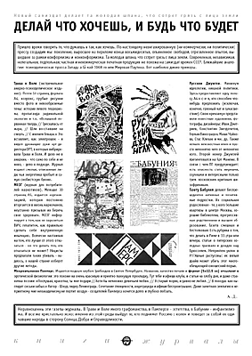
|
Новый самиздат делает та молодая шпана, что сотрет грязь с лица земли
ДЕЛАЙ ЧТО ХОЧЕШЬ, И БУДЬ ЧТО БУДЕТ
Пришло время говорить то, что думаешь и так, как хочешь. По-настоящему
неангажированную (ни коммерчески, ни политически) прессу создадим мы: поколение,
выросшее на переломе конца восьмидесятых, опьяненное свободой, отрезвленное
опытом, вышедшее за рамки конформизма и нонконформизма. Та молодая шпана,
что сотрет грязь с лица земли. Современная, независимая, нелегальная, подпольная,
частная и некоммерческая печатная продукция не похожа на самиздат времен
СССР. Ближайшие аналогии: психоделическая пресса Запада a la май 1968-го
или Мировая Паутина. Вот наиболее дикие примеры.
Трава и Воля (экстремальное анархо-психоделическое издание). Почти
50 страниц формата А4, ксерокс, грубые рисунки вместо фото и невообразимые
темы: история левого терроризма, пропаганда радикальной экологии и т.п.
<Вспышкой порванная твердь // Трескалась от жара, // Шли восставшие на
смерть // С именем Гевара.> Это вставляет, как электрошок - я видел дрожащие
руки арт-директора ОРТ, в которых вибрировала Трава и Воля. И дело не в
анархии, - что само по себе и не ново, - дело в подходе. Журнал издают
смелые, отвязанные люди, чья энергетика пробьет и самую снобистскую броню.
МОЗГ (журнал для потребителей наркотиков). Меньше 30 страниц А5, издается
<организацией, которая постоянно вторгается в жизнь наркоманов, неустанно
призывая их беречь свое здоровье>. МОЗГ информирует о том, как не заразиться
ВИЧ, гепатитом, как правильно сделать себе внутривенную инъекцию. Всячески
настаивая на том, что лучше от этого отказаться - но что делать тем, кто
отказаться не может? Нацисты предлагали таких убивать - надеюсь, в нашей
стране изберут другие методы.
Русские Джунгли. Минимум идеологии, никакой политики. Здесь предоставляют
одну полосу А4 в-с-е-м, кто способен что-нибудь предложить (исключая, конечно,
грязный мат и сумасшествие). Свою <рекламу> представили известные художники,
фотографы, дизайнеры: Иван Дмитриев, Константин Звездочетов, Герман Виноградов,
Маша Чуйкова, Стас Клевак и мн. др. Также немало неизвестных имен и просто
непонятно чего от непонятно кого. Второй номер Джунглей презентовался на
Арт-Манеже. В связи с чем ПГ предупреждает: есть опасность стать жирными,
скучными и интересными только трем московским критикам-шизофреникам.
Газету Бабуния делают беспрецедентно активные и позитивные подростки.
Их социальная родословная - те, у кого большие квартиры в центре Москвы,
хорошие библиотеки, прогрессивные родственники и высшее образование. Газета
смешная и бестолковая. Есть рубрика о том, что делать в Риме в 11 утра
или вечера, статьи о питерских холодных трамваях и дождях над Брюсселем.
Неприятен уклон в РГГУшные растусоны: их вялый драйв может убить этот многообещающий
юношеский порыв.
Микроальманах Памперс. Издается модным клубом Грибоедов в Святом Петербурге.
Название, качество печати и формат (5х12,5 см) отсылают к эротической физиологии:
это похоже на очень красивую и приятно пахнущую прокладку. Тут тебе и афиша
клуба, и статьи на злобу дня, и даже страничка поэзии: <Послушай, красотка,
ты мне подари // Хотя бы немножко девичьей любви. // Я старый моряк, и
давно не любил. // В походах как выглядят сиськи забыл.> Автор - Шнур,
лидер Ленинграда. Сочетание глянцевости, андеграунда и афиши беспроигрышно.
Даже заметная симпатия к неприятному мне неоакадемизму не портит воздух
- создателей Памперса хочется долго и глубоко лобзать.
Неравноценны эти газеты-журналы. В Траве и Воле много графоманства,
в Памперсе - эстетства, в Бабунии - инфантилизма. И все же кристалльно
ясно: именно из этой среды выйдут те, кто поднимет Россию с колен и поведет
за собой ее одичавшие народы в сторону Солнца, Добра и Справедливости.
|
|
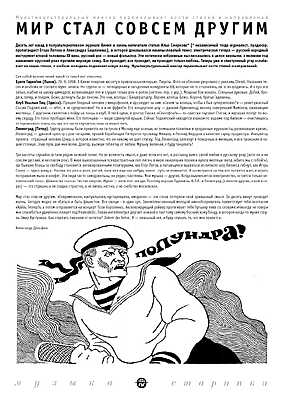
|
|
Мультикультуральный миксер перемалывает кости стилей и направлений
МИР СТАЛ СОВСЕМ ДРУГИМ
Десять лет назад в полуальтернативном журнале Химия и жизнь напечатали
статью Ильи Смирнова* [* независимый тогда журналист, продюсер, пропагандист
Егора Летова и Александра Башлачева.], в которой доказывался незамысловатый
тезис: электрическая гитара - русский народный инструмент второй половины
ХХ века, русский рок - новый фольклор. Эти логически небрежные мысли казались
в целом верными, а явлению под названием <русский рок> прочили мировую
славу. Все проходит, все проходит, не проходит только любовь. Теперь уже
и электронный угар ослабевает на наших глазах, а злобная молодежь поднимает
новую волну. Мультикультуральный миксер перемалывает кости стилей и направлений.
Сам собой возник некий какой-то такой вот списочек.
Брати Гадюкiни (Львов). 29. 9. 1998. В Киеве покупаю кассету в привокзальном
ларьке. Пираты. Фото на обложке уворовано с рекламы Diesel. Названия песен
и альбома не соответствуют записи. Но группа та - легендарные и загадочные
конкуренты ВВ, которые не то сторчались, не то возродились. И я про все
забыл, <забил на ширку-димедрол, возненавидел поп и слушал только рок-н-ролл>
(неточн. пер. с укр.). Мощные бэк-вокалы. Стильные духовые. Добей, бродяга,
пятку, и поедем. Боже, дотянуть бы до пенсии. Это они, хлопцы с Бандерштадту.
Вернее, хлопцы Блюз. Короче, братья Гадюкины.
Клуб Унылых Лиц (Одесса). Пришел бледный человек с микрофоном, и ад
следует за ним. <Зачем ты хочешь, чтобы я был суперчеловек?> - ревет ужасный
Стасик Подлипский. - <Нет, я не суперчеловек! Но я и не фуфел!>. Его концертное
шоу - джанки-бухенвальд, вконец озверевший Мамонов, оживающие мертвецы.
С друганом-скелетом я пойду на танцы в клуб. Я твой чувак, я доктор Пишка.
<Сексофон!>- по-одесски гнусавит Стасик, и мурашки ползут по моему сердцу.
Его голос прободал меня. Его потенциал - выше сдвинутой крыши. Сейчас Подлипский
находится в каком-то ашраме под Киевом - очистившись от героинового говна,
он, как это часто случается, пока не может петь.
Ленинград (Питер). Группу должны были привезти на гастроли в Москву
еще осенью, но помешали политики и продажные журналисты, развязавшие кризис.
Ленинград - духовой оркестр с рок-гитарами, лучший барабанщик Питера по
прозвищу Микшер и Леонид Федоров в качестве саунд-продюсера. Инициатор
проекта - страшный человек Шнур, о котором известно, что он никому не дает
спуску. Под Ленинград заплачут и пожарные, и милиция, и все прохожие в
нашей столице. Злая пуля, дай мне волю. Доктор, выпиши таблетку от любви.
Музыку включай, я буду танцевать!
Три кассеты случайно встали рядом на моей полке. Но во всем есть смысл,
и даже если его нет, я расскажу вам о своей любви к русскому року (хотя
он и не совсем русский, и не совсем рок). В мире выхолощенных псевдострастных
поп-песен, в мире ожиревших героев и культа мертвых звезд (<Витя, мы с
тобой!>), где бывшие борцы за свободу становятся ангажированными политруками,
как Егор Летов, а пытающиеся вырваться из липкого шоу-бизнеса гибнут, как
Игорь Сорин - здесь живу я. Назови это рок-н-ролл, реггей, панк или еще
как-нибудь иначе - суть не изменится. Я насмотрелся на тех, кто пытается
жить и играть по правилам мыла и конфет. Эти люди часто самодовольны, но
редко счастливы. Моя музыка - другая. Когда выключается электричество,
остается только человеческий голос. Шаманство голоса. Чистая энергия. Идеал
- анти-поп-звезда. Поэтому хороши Гадюкины, К.У.Л. и Ленинград (и многие
другие, о ком в сл. раз) - это страшно, а не сладко, страстно, а не липко,
честно, а не снобство московское.
Мир стал совсем другим. <Современное>, <актуальное>, <устаревшее>, <модное>
- эти слова потеряли свой привычный смысл. За десять минут проходит жизнь.
Сегодня модно не ебаться и быть фашистом. Все овощи - в один суп. Закомплексованный
молодой кинообозреватель приветствует тебя возгласом <Хайль Гитлер!>, а
потом отправляется на концерт Псоя Короленко. Акселерирующий рэйвер протягивает
тебе бутылку пива со словами:>Никогда не говори мне спасибо!> и удивленно
пляшет под freakodelic. Левак-интеллектуал дергает ножкой в такт тому самому
боснийскому бэнду, в котором когда-то мучил струны Эмир Кустурица. Как
отделить пирожки от котяток? Jedem das Seine. Я - реальный чел, и буду
слушать то, что мне нравится.
Александр Дельфин
|
|
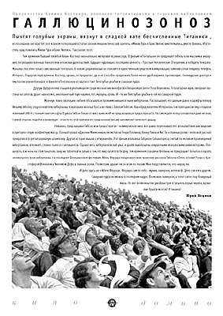
|
|
Пророчества Кевина Костнера, апология тоталитаризма и торговля киберпанком
ГАЛЛЮЦИНОЗОНОЗ
Пыхтят голубые экраны, вязнут в сладкой вате бесчисленные Титаники ,
из последних сил хрустит поп-корном потерявший остатки зрения механистический
зритель. <Микки Рурк и Брюс Уиллис вместе мылись, вместе брились. И в постель
одну ложились Микки Рурк и Брюс Уиллис>. Так сказал поэт.
Тем временем бывший плейбой Кевин Костнер окончательно мутировал
в режиссера. В фильме <Почтальон> он предрекает гибель всех мыслимых иерархий,
погрязших в военных технологиях и поисках удовольствий. Будущее чудовищно,
последняя ценность - Простые Человеческие Отношения, а победить Генерала-Маньяка
способен только самозванный Почтальон. В новом Средневековье он становится
единственным средством коммуникации, заменив собой пейджер, телефон, Интернет.
Подергав нерв времени, Костнер, однако, не предлагает, да и не способен
предложить более-менее удобоваримое противоядие. Голливудские доктора и
ему прописали хеппиэндол: в финале <Почтальона> из ада восстают белозубые
улыбки и сахарная пудра.
Другую футурологию отыщем в ультрамодном среди московских кинофагов
<Звездном десанте> Пола Верховена. Тоталитарная идея, звездная свастика
на сапогах, дранг нах космос, инопланетный паук-нацмен, пот, мускулы, кровь.
И - те же белозубые улыбки в той же сахарной пудре.
Мрачную техно-эволюцию любили обсасывать и промаммонившиеся
ныне киберпанки. Рассказывают, что давным-давно к шрифтштеллеру Уильяму
Гибсону, отцу-основателю киберпанка, пожаловали веселые боссы во главе
с Биллом Гейтсом. Как <предсказателю Интернета>, они преподнесли ему в
подарок новенький 286-й с полным пакетом софта. В ужасе Гибсон бежал от
них с криком:>Я не предсказывал, я предостерегал!>. На самом деле <отец-основатель>
даже не знал, с какой стороны подойти к клавиатуре - отчасти по этой причине
его предсказания весьма напоминают киевского дядьку.
Неважно, предсказывал Гибсон или предостерегал -
коммерческое кино все равно переплавило его апокалиптические видения в
приторно-серую конфектную массу. Полный провал <Джонни Мнемоника>, несмотря
на Генри Роллинза, Кеану Ривза и Айс Ти в главных ролях - неплохой рассказ
превратился в третьеразрядную штамповку. Другая история вышла с <Нирваной>.
Этот фильм итальянца Габриэле Сальватореса, снятый по мотивам произведений
киберпанков, втягивает, словно пылесос галлюциноза. Однако весь киберпанковский
ужас и драйв выхолощены аккуратными итальянскими вивисекторами. Пляши хоть
всю ночь на этом танцполе, закусив таблеткой и забыв о том, что мир катится
в бездну. Тем временем сородичи Феллини не прекращают попыток оседлать
своевольного коня-киберпанка. На последнем Венецианском фестивале Абель
Феррара предложил свою трактовку рассказа Гибсона <Отель <Новая Роза> с
Кристофером Уолкеном и Уиллемом Дефо в главных ролях. Посмотрим, ударит
ли он всем по глазам. Мне представляется, что навряд ли.
И дело здесь не в Абеле Ферраре. Феррара сам по себе - мужик,
наверное, неплохой. Дело совсем в другом. Сахарная пудра возможна в последнем
кадре. Возможен, наверное, и топот сапог под бравурный марш. Но вот возможны
ли сухой выстрел в затылок, взрыв черепа, кровавые брызги мозгов? И тишина?
Юрий Лоцман
|
|
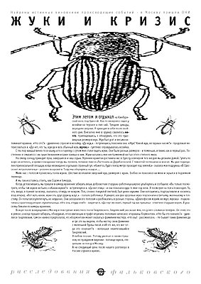
|
|
Найдены истинные виновники происходящих событий - в Москву пришли ОНИ
ЖУКИ И КРИЗИС
Этим летом я отдыхал на Кинбурнской косе, под Одессой. Как-то вечером
я сидел у хозяйки на террасе и пил чай. Трещали цикады, верещали сверчки.
Я приходил в себя после знойного дня. Внезапно мне в кружку свалилось нечто.
Приглядевшись, я обнаружил, что это чудовищных размеров жук. Жук был усат
и весьма напоминал таракана. <Что это?> - удивленно спросил я хозяйку.
<Да жук,> - потупившись, пояснила она. <Жук? Какой жук, не таракан часом?>
- продолжал интересоваться я. <Да нет, что ты, жук да и все, обычный жук,
жучок,> - суетливо оправдывалась хозяйка.
С тех пор каждый вечер то в чашку, а то в тарелку с супом мне
стали падать жуки. Они были разных размеров - и поменьше, и такие, как
в первый раз. Постепенно я смирился с их существованием и даже привык к
ним. Жуки казались мне неотъемлемой частью этого степного мира.
На смену солнцу приходит луна, завершился и наш отдых. Утренняя
<ракета> доставила нас в Одессу, а вечером того же дня мы уезжали домой.
Гулять по жаре не хотелось, и время в ожидании поезда мы провели, попивая
пиво в <Ласточке> на Дерибасовской. С темнотой поспешили на вокзал. Мы
уже подходили к привокзальной площади, когда неожиданно я услыхал странный
гул. <Кажется, будто поезд метро проходит под землей,> - сказала моя подружка.
<В Одессе нет метрополитена,> - резонно возразил я. Тогда мы обернулись
назад и ...
Мимо нас с топотом пронеслась толпа жуков. Шествие возглавлял
зверский жук, размером с кулак. Злобно он покосился на меня и скрылся в
подземном переходе.
А мы так и остались стоять, как Содом и Гоморра.
Когда, успокоившись, мы пришли в камеру хранения забирать вещи,
доброхотная старушка-работница широко улыбнулась и сообщила: <Вы только
посмотрите, чтобы там жуков не было.> <Каких жуков?> - встрепенулся я.
<Да вот этих,> - и она показала куда-то мне под ноги. Я посмотрел на пол
и похолодел. То, что, входя, я принял за ковер, оказалось отнюдь не ковром.
Пол, словно пожухлой листвой, был усеян жуками. Они копошились, подпрыгивали
и носились взад-вперед. <Вот жуть какая, жуки эти, друг дружку жрут,> -
сказала работница. Я увидел, как два здоровых жука подскочили к третьему,
маленькому и толстому. Он попытался улепетнуть, но неудачно. Они разорвали
его пополам и разбежались в разные стороны. <Дихлофосом морим, не мрут,
мрази,> - подключилась к разговору вторая служительница. <Кто они, откуда
они?> - закричал я. <Да черт их знает, первый год как пришли,> - ответили
старушки хором. В ужасе мы бежали из камеры хранения.
Вскоре после возвращения в Москву я повстречал известного поэта
Гандлевского. Гандлевский рассказал мне, что у него сломался телефон. Он
отнес его в ремонт, а когда пришел забирать, обнаружил, что в квитанции
в графе <причина поломки> написано: <тараканы бормонтов>. <Что бы это значило?>
- удивлялся Гандлевский. Сам он наивно предполагал, что <бормонтов> может
оказаться фамилией мастера. <Что вы! - рассмеялся я. - Не бывает таких
фамилий, да и где это вы видели, чтобы мастер свою фамилию с маленькой
буквы писал.> <А что же, что же тогда это означает?> - вопрошал перепугавшийся
Гандлевский.
Я люблю поэзию. Потому умолчал о своем страшном, но правдивом видении
- полчище жуков, спешивших на поезд в Москву.
А на следующий день после нашего разговора в России случился кризис.
|
|
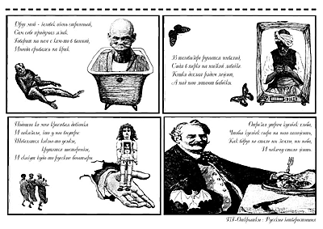
|
Друг мой - человек очень странный,
Сам себе придумал язык.
Говорит на нем с кем-то в ванной,
Иногда срываясь на крик.
В телевизоре ругается инвалид,
Сидя в парке на низкой лавочке.
Кошка дохлая рядом лежит,
А над нею летают бабочки.
Подошла ко мне красивая девчонка
И показала, что у нее внутри:
Шевелятся какие-то усики,
крутятся шестеренки,
И скачут куда-то русские богатыри.
Отрезал утром кусочек хлеба,
Чтобы кусочек сыра на него положить,
Как вдруг не стало ни земли, ни неба,
И некому стало жить.
|
|
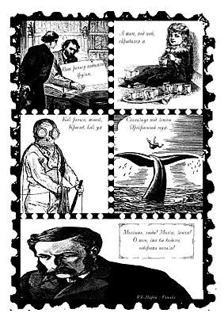
|
Вот рельсу подняли друзья,
А там, под ней, скрывался я.
Как рельса, тонок,
Красив, как уж
Скользнул под землю
Прекрасный муж.
Молчите, люди! Молчи, земля!
О том, что вы видели,
говорить нельзя!
|
|
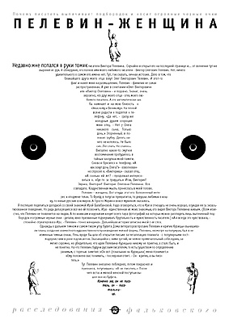
|
Почему писатель выпячивает подбородок и носит огромные черные очки
ПЕЛЕВИН-ЖЕНЩИНА
Недавно мне попался в руки томик писателя Виктора Пелевина. Случайно
я открыл его на последней странице и... от волнения тут же выронил из рук.
Я обнаружил, что полное имя моего любимого писателя - Виктор Олегович Пелевин.
Нет, ничего удивительного в самом его имени нет. Тут, так сказать, личная
история. Дело в том, что ближайшего друга моего отца зовут Олег Викторович
Пелевин. И этот-то факт и навел меня на размышления. Пелевин - фамилия
не самая распространенная. А уже в сочетании <Олег Викторович> или <Виктор
Олегович> - и подавно. Значит, очень вероятно, что друг моего отца - отец
моего любимого писателя. А это автоматически как бы намекает и на мою близость
к <Ужасному и Великому>. На теплой волне радости я подлетел к телефону.
<Да нет, - сразу же холодным душем огорошил меня отец. - Нет у Олега никакого
сына. Только дочь.> Огорченный, я положил трубку. Делать ничего не хотелось.
Не было сил. Лег спать. Не спалось. Внезапно какое-то смутное воспоминание
пробудилось в тайных закоулках моей памяти. Снова я бросился к телефону.
<А как зовут дочь Олега?> - взволнованно спросил я. <Виктория,> - сказал
отец. <А сколько ей лет? - продолжал интересоваться я. <Где-то за тридцать.>
Итак, Виктория! Эврика, Виктория! Виктория Олеговна Пелевина. Все совпадало.
Кощунственная мысль пронеслась в моей голове.
Пелевин - женщина. Вот откуда этот его болезненный интерес к
<подмене тела>. То Фрейд в попугая превратится, то девушка любимая в кошку,
то новые русские в комаров. А Просто Мария и вовсе мужиком оказалась.
Я поспешил поделиться догадкой со своей знакомой Ирой Балабановой.
Надо оговориться, что к Ире я отношусь не очень хорошо, осуждая ее за экзальтированное
поведение. Но ради дела решился все же ей позвонить. Ира - единственная
из моих знакомых, кто видел Виктора Пелевина живьем. (Всем известно, что
Пелевин не появляется на людях. А по книжкам и журналам кочует всего пара
фотографий, на которых можно разглядеть лишь выпяченный подбородок и огромные
черные очки - детали, явно призванные подчеркивать брутальность и мужественность
писателя.) <А я всегда это чувствовала, - спокойно отреагировала Ира. -
Пелевин - точно женщина>. Дальнейшая история записана мной с ее слов.
Однажды в дальнем темном и самом тихом углу буфета Дома литераторов
прозаик Пелевин и критик Курицын вынашивали планы создания совместного
художественного произведения мелкой формы. Пелевин, несмотря на полумрак,
был в неизменных темных очках. Речь вроде бы шла об открытом письме за
легализацию плагиата - с популярными постмодернистами в роли подписантов.
Оказавшийся с ними третий, ни чем не примечательный собеседник, заметил
скромно, но убедительно, что идея Пелевина-Курицына никому не приятна,
а стало быть, и не понятна. На что Пелевин, будучи русским писателем, то
есть существом по определению ранимым, с горечью заметил: <Он вот (показывая
на Курицына) меня понимает.> <Ему положено вас понимать, - последовал ответ.
- Он - критик, а вы писатель.>
Тут Пелевин внезапно побледнел, потом покраснел и признался,
потупившись: <Я не писатель.> После чего встал и мягкой женской поступью
вышел вон из буфета.
Конечно же, он не писатель, он - писательница.
|

|
Работа, как известно, не может быть закончена. Работа может быть только
прекращена. Работу над данным объектом безнадежно не удается прекратить.
Объект очень долго витал в воздухе, потом был отловлен и попытался воплотиться
в офисное сооружение возле Смоленского метромоста. Его типологически жилая
форма в конце концов победила содержание, и он стал особняком, а потом
многоэтажным жилым домом на Патриарших. Он обледенел, оброс сосульками,
оттаял и образовал роддом в Вифлееме или около того. ЯЙЦО. Яичко.
ООО Обледенение Архитекторов
|
|
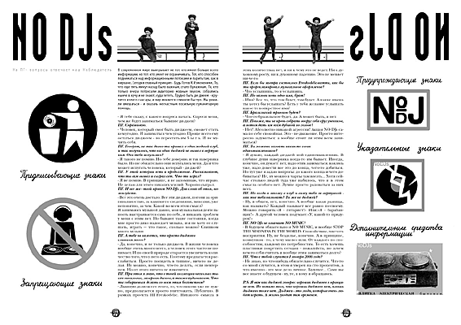
|
|
NO DJs
На ПГ- вопросы отвечает наш Наблюдатель
В современном мире выигрывает не тот, кто имеет больше всего информации,
но тот, кто умеет ее ограничивать. Тот, кто способен подниматься над информационными
потоками и парить там, как в нирване. Сегодня главный принцип - Будь Готов
К Изменениям. То, что еще пять минут назад было важным, стало бумажным.
Те, кто только вчера потрясали аудиторию модным звуком, собрались нынче
в кучу и не знают, куда лететь. Трудно быть ди-джеем - крутится колесо
сансары, и мир меняется слишком быстро. Мы решили вмешаться - и оказать
несчастным посильную гуманитарную помощь.
- Я тебе скажу, с какого вопроса начать. Спроси меня, чем же будут заниматься
бывшие ди-джеи?
ПГ. Спрашиваю.
- Человек, который смог быть ди-джеем, сможет стать кем угодно. И заниматься
чем угодно. Проще всего ему остаться ди-джеем - но перестать им б ы т ь.
И не мучить себя.
ПГ. Говорят, не так давно ты пришел в один модный клуб, и так
получилось, что ни один ди-джей не вышел к вертушкам. Они тебя испугались?
- Я такого не помню. Но тебе доверяю, и так наверняка было. Но не обязательно
они испугались меня. Да и что может испугать человека, который - ди-джей?
ПГ. У этой истории есть и продолжение. Рассказывают, что ты
сам вышел и сыграл сет. Что ты играл?
- Я не помню. В принципе, я не запоминаю, что играю. Не делаю для этого
никаких усилий. Хорошо сыграл.
ПГ. И все же - твой проект NO DJs. Два слова об этом, пожалуйста.
- Все это очень достало. Все эти ди-джеи, погоня за оригинальностью,
за какими-то сведениями, миксами, уже непонятно, за чем. Какой во всем
этом смысл?
Я занимаюсь музыкой давно, моя музыкальная деятельность выстраивается
сама по себе, и никаких проблем у меня с этим нет. Но бывают такие состояния,
когда мне просто дико надоедает музыка, и я не хочу ее слушать, играть
- что такое, сколько можно? Слишком много музыки.
ПГ. А тебе не кажется, что просто ди-джеев
слишком много?
- Да, конечно, и не только ди-джеев. В жизни человека вообще очень
много всего, а человек этого часто не понимает. И по своей природе старается
увеличить количество того, что у него есть. Поэтому предлагается расслабиться.
Просто посидеть в тишине, ничего не делая. Ну можно, конечно, что-то делать,
если невтерпеж. Но от этого ничего не изменится.
ПГ. При этом я знаю, что в твоей коллекции несколько тысяч виниловых,
лазерных дисков, а также аудиокассет. Что ты собираешься делать со всем
этим богатством?
- Львиную долю всего этого, то, что никому уже не нужно, предполагается
просто уничтожить. Публично. В рамках проекта ПГ-Freаkodelic. Никакого
смысла в этих количествах нет, и ни к чему это не ведет. Ни к духовному
росту, ни к духовному падению. Это не меняет ни-че-го.
ПГ. Если бы завтра состоялось Freakodelic-патти, как бы ты прорекламировал
музыкальное оформление?
- Что услышишь, то и услышишь.
ПГ. Но назови хоть одно имя, брат!
- Имя? Все то, что там будет, там будет. А какие имена ты хотел бы
услышать? Есть у тебя желание услышать какое-то конкретное имя?
ПГ. Бразильский трип-хоп будет?
- Что-то бразильское будет, да. А может быть, и нет.
ПГ. Похоже, ты не прочь собрать вокруг себя круг учеников, а
потом дать им всем дубиной по голове?
- Нет! Абсолютно никакой агрессии! Акция NO DJs сама по себе спокойная.
Это - не-движение. Просто интересно задуматься: а вообще стоит ли этим
всем заниматься?
ПГ. Ты можешь назвать каких-то своих
единомышленников?
- Я думаю, каждый ди-джей мой единомышленник. В глубине души наверняка
когда-то им бывает. Иногда, конечно, он думает: нет, надо этим заниматься,
взялись уже, надо довести все это до конца, чего-то добиться. Но тут уже
я задаю вопросы: до какого конца и чего добиваться? Не, ну можно в чарты
там влезть... Хотя сейчас столько людей туда уже набилось, что и в этом
смысла особого нет. Лучше просто радоваться за них всех.
ПГ. Но когда я захожу в клуб и вижу тебя за вертушкой - как
мне тебя называть? Ты же не ди-джей?
- Ну, в общем, нет, конечно. А вообще какая разница, как называть?
Каждый называет все равно по-своему. Можно говорить:>Я - гитарист!> Или:>Я
- барабанщик!> А другой человек подумает:>У, какой-то придурок!>
ПГ. NO DJs не означает NO MUSIC?
- В будущем обязательно и NO MUSIC, и вообще STOP THE MADNESS IN THE
WORLD. Спокойствие, чистота восприятия. Ну, не безделье, конечно. А в принципе,
коммунизм - то, к чему мы все шли. От каждого по способностям, каждому
по потребностям. То есть хочешь пластинки покрутить сегодня - пожалуйста,
но зачем кем-то себя считать и вообще этим заниматься долго?
ПГ. Что с тобой случится 1 января 2000 года?
- Не знаю, но что-нибудь обязательно случится. Что-то со мной случится,
в этом я уверен на сто процентов, а что именно - это мое дело личное. Будущее...
Сами вы все знаете о будущем - ну, те, к кому я обращаюсь.
P.S. Я вам как ди-джей говорю: хороших ди-джеев в принципе нет. Но помимо
того, что хороших ди-джеев нет, плохих ди-джеев тоже нет. Ди-джеи - это
люди, которые очень любят играть. А жизнь уходит тем временем.
|

|
Безумие должно бодрствовать над мыслью!
Из интервью Франсуа Евальда с Жаком Деррида Март 1991года Magazin litteraire
- Есть ли философия Жака Деррида?
- Нет.
- Значит, нет и послания (message)?
- Нет.
- Есть ли норматив?
- Конечно, это есть, только это и есть. Но <...> почему мне очень
не нравится слово "норматив" в этом контексте? То, что я пытался внушить
об ответственности* [* имеется в виду понятие ответственности как мысли
или действия, определяемого не только тем, из чего оно исходит, но и тем,
на что оно направлено - Д.Б.], отсылает скорее к закону, к императивному
предписанию, которому нужно отвечать в конечном счете без нормы, без нормативности
и без актуально представимой нормальности, без всего, что является в конечном
счете объектом знания, принадлежа порядку бытия или ценностей. Я даже не
уверен, что понятие "то, что должно", во всяком случае, "то, что должно
быть", может быть соразмерно [данной задаче]. Конечно, будет искушение
возразить: из всех этих утверждений, по-видимости негативных и абстрактных,
сложно вывести политику, мораль или право. Я думаю противоположное. Если
не берут в расчет всех этих сомнений, вопросов <...> и т.д., то политика,
мораль, право (которые я не смешиваю здесь со справедливостью) обеспечивают
себя и умиротворяются в заблуждении-приманке (leurre) и добросовестности
- и никогда не далеки от того, чтобы быть или заниматься чем-то другим,
чем мораль, политика или право.
- Это вы выводите (tirez) из вашей философии?
- Что вы понимаете под словом "выводить"? Черпать? Находить? Дедуцировать?
Индуцировать? Прогнозировать? Заключать? Что касается философии, которая
была бы "моей", я вам уже сказал, что ее нет. Я предпочитаю говорить об
опыте - это слово означает одновременно переход, путешествие, испытание,
является в одно и то же время и опосредованным (культура, чтение, интерпретация,
работа, общие вещи, правила и понятия), и единичным - я не говорю непосредственным
<...>. Подхватывая использованное вами слово [и обновляя его значение,
можно сказать:] то, на чем я настаивал, "получается" (se tirer) из этого
опыта (никогда от него не отделываясь (s`en tirer)), говоря точнее, там,
где пересекаются работа и единичность, универсальность и эта привилегия
единичности - о том, чтобы отказаться от нее, не может идти и речи, отказаться
от нее было бы как раз имморально. И это не та привилегия, которая связана
с моим предпочтением, но привилегия, в которую я [уже] нахожу себя вписанным
и которая делает ощутимым решение или единичную ответственность, без которой
не было бы ни морали, ни права, ни политики. Обнаруживается (с множеством
сложностей, вдаваться в которые сейчас не место и не время <...>), что
я рожден в европейской привилегии, в привилегии языка, нации или французского
гражданства, а если не ограничиваться только этим примером - в привилегии
этого времени, того, что я люблю, моей семьи, моих друзей, моих врагов,
конечно, и т.д. Эти привилегии [предпочтения] могут каждое мгновение противоречить
и угрожать императивам универсального учета другого - и этo повседневный
опыт [каждого],- но их нейтрализация, их отрицание были бы также противоположны
какой бы то ни было подвижной этико-политике. Все "получается"(se tirer)
для меня из опыта (живого, повседневного, наивного или рефлексивного, всегда
брошенного против невозможного), из этой привилегии, которую мне нужно
одновременно утверждать и приносить в жертву. Очень упрощая, для меня всегда
присутствует - и я полагаю, что здесь необходимо иметь более, чем один
язык, - Мое [мой язык] и Другое [язык другого], и мне нужно пытаться писать
таким образом, чтобы язык другого не страдал от моего, чтобы он терпел
[допускал] меня, не страдая от этого [сам], пользовался гостеприимством
моего языка, не теряясь в нем и не интегрируясь в него. И взаимно, но взаимность
[обоюдность, соответствие] здесь не является симметрией - и прежде всего
потому, что мы не имеем здесь никакой средней [нейтральной] меры, никакой
общей меры, заданной через нечто третье. Это должно изобретаться каждое
мгновение, в каждой фразе, без обеспеченности и без абсолютной страховки.
Говоря иначе, безумие, определенное "безумие" должно подстерегать [нас]
на каждом шагу, и в самой сущности бодрствовать над мыслью, также, как
и разум.
Перевод и подготовка фрагмента - Денис Беристул
ПГ беседует с Д. Беристулом
ПГ. Расскажите, пожалуйста, о кризисе в современной философии. Только
коротко.
ДБ. Кризис заключается в следующем: некоторые люди поняли, что
философия однажды в истории философии умерла. Но она не заметила своей
смерти. "Некоторые люди" - это французская часть современных философов,
обыгрывающих мотивы смерти философии, как, например, это делает Жан-Люк
Нанси в книге "Забвение философии".
ПГ. Почему для нашего журнала вы предложили фрагмент интервью с Жаком
Деррида?
ДБ. Мне показалось, что достаточно обширный замысел ПГ мог бы
включать в себя и тот замысел, который в своей философии - если еще можно
так говорить - пытается воспроизвести Деррида. Это то, что я могу назвать
радикальным движением мысли, для которого в первую очередь важно то, что
может быть, а не то, что есть.
ПГ. Может ли в наши дни, в ближайшем будущем появиться новый Карл Маркс
- со всеми последствиями?
ДБ. Вы имеете в виду Деррида? Я думаю, что от этой "философии"
никаких изменений в марксистском смысле, в плане непосредственного влияния
на реальность, ждать не приходится. Там нет идеологии, хотя и для Маркса
идеология была отрицательным понятием. Но у Деррида нет какого-то Учения
о каких-то Идеях. Хотя такое Учение, которое способно стать почвой для
глобального передела мира, может появиться всегда. Но как раз то, что я
называю радикальным движением мысли, может быть не совсем удачно употребляя
здесь политологический термин, противостоит подобным процессам.
ПГ. Может ли сыграть в такую игру отечественный литератор А. Дугин?
ДБ. Да, судя по тому, что мы о нем узнаем. Я думаю, однако, что
он не Карл Маркс, а если и Карл Маркс, то совсем уже десятого разряда.
Он просто грубо использует какие-то чужие тексты и мысли в качестве туалетной
бумаги, себе на потребу.
ПГ. Хотели бы вы на страницах нашего журнала передать кому-нибудь философский
привет?
ДБ. Да, если можно. Я передам привет и пожелаю крепкого здоровья
Жаку Деррида, скорейшего освоения жизни Жан-Люку Нанси - дело в том, что
он живет с чужим пересаженным сердцем,- а также всем женщинам-философам.
|

|
|
MINSK: ТАТАЛЬНАя ДЫкТАТУРА?
Из советского голого ада восстал призрак КГБ и, не отважившись
пока пройтись по Европе, взял власть в Белоруссии. Столичные корреспонденты
наездами бывают там, привозя с собой нездоровую атмосферу скандала, и с
некоторым сочувственным превосходством описывают ужасы жизни при Лукашенко.
Сам <прэзiдэнт> время от времени шокирует мировую общественность: то дипломатов
иностранных опустит, то посоветует рабочим меньше кушать мяса да водочкой
горе заливать. Друзья ПГ незалежно друг от друга побывали там. Из их рассказов
и сложился этот разворот, который мы посвящаем вольному (в прошлом) городу
Минску .
<Мы будзем служыць толькi Праудзе, Айчыне i вечным iдэалам найвышэйшэй
справядлiвасьцi>.
Участники JAH DIVISION - о своих впечатлениях от белорусского турне,
которое состоялось прошлой зимой, и о загадочной группе Непалево, которая
играет ямайскую музыку в мрачном постпанковском духе.
ГЕРБЕРТ МОРАЛЕС
Прошлой зимой мы познакомились с группой Непалево, когда выступали
вместе в одном концерте в Минске... Ой, неправда. Мы сначала выступали
в Могилеве вместе, а потом уже в Минске. У нас не поехал басист. И мы,
увидев первого же, а это и был басист группы Непалево, предложили ему поиграть
с нами. И так стусовались. Лидера группы зовут Володя Кулишкин, он, конечно,
похож на Сережу Олди. Но мне кажется, что творческой связи между ними нет.
Нас очень тепло приняли в Минске: накормили, предложили ванну...
А на концерте люди уже со второго куплета начали подпевать, чем меня восхищали,
и хотя в Могилеве я сорвал голос, все равно пел замечательно. Тот positiv
vibration, который был в Минске, очень редкий. Такого в Москве я давно
не видел.
РОШЕЛЬ
Лидер группы Непалево - очень хороший человек, но сумасшедший...
Хороший сумасшедший. Увлечен, тянет за собой группу. Там человек шесть,
и притом женские подпевки. У них очень неплохие вещи есть, вот только музыканты
меняются, видимо, часто. В музыке ребятам надо еще работать. Впрочем, где
есть один хороший сумасшедший, там есть и все остальное. Пока, на мой взгляд,
это Комитет Охраны Тепла-2. По силе.
Минск - это Москва восьмидесятого года. Все. Одно слово. Я бы
там жил.
ЮЛЯ
Непалево играет реггей, причем достаточно давно. Я не помню точно,
сколько они существуют, но порядочно. К сожалению, они ограничены в передвижениях
и действиях, потому что нет мест, где играть. Даже с того времени, как
мы там были, с прошлой зимы, закрылось еще несколько клубов.
Гере больше всего запомнилось то, как два молодых человека, представившихся
студентами, в течении сорока минут после концерта объяснялись ему в любви
к Лукашенко. Мы провели аналогию с Россией: трудно найти сразу двух молодых
людей, которые бы пламенно и искренне говорили о своей любви к Ельцину.
А те двое долго и неотступно Геру преследовали. Это не было наездом, они
как-будто делились переполнявшим их чувством. Гера был в шоке.
ВАРВАРА АВДЮШКО
В начале ноября я работала в Минске в качестве визажиста на съемках
рекламного клипа. Организаторы предлагали показать нам стадион, потому
что <президент очень любит спорт>. Или поехать посмотреть домик-музей РСДРП.
Но мы от всего этого отказались. В результате за полтора дня пребывания
в Минске я узнала, наверное, его лучшую сторону. Я познакомилась с молодым
человеком по имени Паша. Квартира у него - со звездами на потолке, с разрисованным
балконом, с оборудованным парикмахерским углом. На своей собственной голове
он соорудил что-то вроде красных иероглифов. При полном отсутствии информации
человек умудряется делать такое... Кстати, для съемок Паша покрасил одного
мальчика в зеленый цвет. Несмотря на то, что тому дали справку об участии
в съемках клипа, на следующий день его отчислили из института.
В Москве кто в серебряной куртке, кто в золотых ботинках, кто
с хуем на шляпе, а там серо-коричневые тона: стены, одежда, весь город.
Рекламы дико мало. Машин - как у нас летом в выходной день. Молодежных
веселых мест, как мне показалось, просто нет. Для вечеринки арендуют какое-то
помещение и там что-то производят.
Мне показали тайное местечко, в которое можно попасть только
по суперрекомендации и только в сопровождении доверенного лица. Заходишь
ты в обычную вроде квартиру, только вдруг попадаешь в модный магазин, с
полочками, со стильными плакатами, со странными осветительными приборами.
Владелец этого магазина - это как у нас раньше были фарцовщики, которые
брали вещи непонятно откуда и торговали возле гостиницы Космос. Вот и он
тоже ездит, набирает партии вещей, заполняет ими магазин. По всей видимости,
это единственное место в городе, где можно что-то купить.
Меня изумил хозяин этого магазина, когда спросил:>А почему все
в Москве ходят в обуви Ecco?> И вытащил откуда-то из-под полы заботливо
сохраненный Птюч, где было несколько реклам этой обуви. Я объяснила ему,
что это реклама, коммерция, это ничего не значит, а он спросил:>Но ведь
тут на фотографиях молодые люди, значит, молодежь в этом ходит?>. Я говорю:>Нет,
молодежь в этом не ходит.> А он говорит:>Но почему тогда такие фотографии?>
Мы не могли понять друг друга.
Я им завидую. Я бы хотела там жить. В Минске.
ПЕТР КАЗНАЧЕЕВ лидер Антифашистского Молодежного Действия
В Минске я попал в среду бунтарей, которую здесь найти просто
невозможно, эти люди живут одним словом - Свобода. Надо понимать, что ядро
современной политической оппозиции в Белоруссии составляет молодежь, такие
люди, как мы. При том, что Примаковы сидят на пенсии и помалкивают, а правят
люди возраста Лукашенко. Удивительно, как быстро тихую и немного пришибленную
страну можно превратить в рассадник агрессивной имперско-фашистской идеологии.
Оттуда исходит энергия. Там развиты все направления современной
музыки, современной культуры. Там существовал клуб Резервация, бывший средоточием
всей неформальных движений, но это быстро прикрылось режимом. Вообще там
возникают такие мечущиеся точки - на фоне закрывающихся радиостанций и
клубов, на фоне создающегося комсомола дробь гитлерюгенда. У нас зачастую
трудно разграничить - мэйнстрим, не мэйнстрим. У них все это точно очерчено,
и слово <неформал> обретает там свой прямой смысл.
Люди там четко разделены культурно и поколенчески. Там две нации,
но это не русские и белорусы, не совки и европейцы, это нация колхозников,
отставных военных и кагэбэшников и нация молодежи и национальной интеллигенции.
Они не знают общего языка. И ситуация такова: либо революция нации свободных
людей произойдет в наше время, пока мы молоды и они молоды, или мы будем
ждать, пока та, другая нация, физически вымрет.
Периодически режим, как и любой режим на грани, прибегает к жесточайшим
мерам, включая обыски и погромы. Они не просто играют в изобличение шпионов,
они реально сажают людей. У нас люди могут выйти на улицу, если их не устроит
повышение цен, и то вряд ли. А там уже нет никаких цен, есть карточки,
дефицит, очереди. И те, кто выходит на оппозиционные демонстрации, - студенты,
художники, музыканты, четырнадцатилетние школьники, - обретают в этом безумный
драйв свободы.
|
|
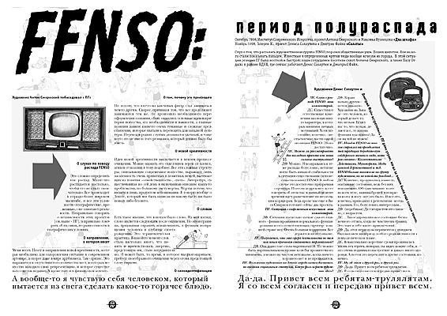
|
FENSO: период полураспада
Октябрь 1998, Институт Современного Искусства, проект Антона Смирнского
и Максима Кузнецова <Два шкафа>
Ноябрь 1998, Галерея XL, проект Дениса Салаутина и Дмитрия Файна
<Салаты>
Слух о том, что распалась художественная группа FENSO, поразил общественные
уши. Пошел шепоток. Кое на кого стали показывать пальцем. Известные в определенных
кругах люди вообще исчезли из города. В этой ситуации реакция ПГ
была жесткой и быстрой: наши сотрудники посетили сквот Антона Смирнского,
а также Базу Отдыха в районе ВДНХ, где сейчас работают Денис Салаутин и
Дмитрий Файн.
Художник Антон Смирнский побеседовал с ПГ:
О слухах по поводу распада FENSO
Это сложно определить как распад. Мало что распадается настолько, чтобы
его не стало окончательно. Все происходит в гораздо более широком масштабе,
и все эти условности - географические, временные, - не означают реальности.
Неправильно говорить о независимости этих проектов [см. выше - ПГ], а правильно
говорить об их связи, но разнесенности в географических условиях.
О направлении, в котором несет
Меня несет. Несет в направлении новой креативности, которая необходима
для оздоровления ситуации в современном арт-мире, а скорее даже в мире
арт-бизнеса. Там - кризис. Это выражается в отсутствии того количества
мест, в которых искусство находило свою репрезентацию, и которое существовало
еще так недавно. А кроме того и в финансовом аспекте.
О том, почему это произошло
Не потому, что кто-то из ключевых фигур стал заниматься чем-то другим.
Скорее, причина в том, что все продолжают занимаются тем же. Не произошло
необходимого переоформления сознания, сбоку оказались основные идеи и критерии
искусства, его необходимости и важности, а главные позиции заняли какие-то
очень туманные и сложные представления, которые пытались переводить для
западной культуры. Перевод в редких случаях оказывался удачным, и чаще
всего это не имело того резонанса, который должно было бы иметь.
О новой креативности
Идея новой креативности заключается в некоем процессе очищения. Можно
назвать это отделением зерен от плевел, агнцев от козлищ и тому подобное.
Все эти сложные структуры, описывающие современное искусство, выражают
лишь засаленность очень приватных и понятных вещей, вытекающих из понятия
<семейственности>, <уюта>. Литература, существовавшая по сей день и включавшая
описание каких-то проблематик, по большому счету мертва. Мертва потому,
что является лишь продуктом непонимания. Я говорю вообще о Тексте, который
мог быть написан по какому бы то ни было поводу либо без него.
О словах
Есть такое мнение, что в начале было слово. На мой взгляд, слово является
следующим после ощущения. Но это и граница, призванная охранять и напоминать,
и функция возвращения человека в глубины своего рождения. Это терапевтическая
практика. В какой-то момент слов стало настолько много, что понять и прочувствовать
энергию, предстоящую им, стало затруднительно. И может быть, то время,
в которое мы разговариваем, требует своеобразного очищения через огонь
предстоящей слову страсти.
О самоидентификации
А вообще-то я чувствую себя человеком, который
пытается из снега сделать какое-то горячее блюдо.
Художники Денис Салаутин и Дмитрий Файн встретились с ПГ рано
утром, когда за окном было еще совсем темно:
ПГ. Слухи о распаде FENSO - ваш комментарий.
ДС. Существуют естественные изменения эволюционного характера, в которых
минимум личных мотиваций. Хотя последние, конечно, - неотъемлемые части
самой эволюции FENSO. Этого достаточно.
ПГ. Можно ли рассматривать два последних проекта как ваши сольные выступления?
ДФ. Можно. И возвращаясь к теме распада: безусловно, нет и не могло
быть никакой стабильности в ситуации существования (или несуществования)
FENSO. В любом случае это достаточно призрачная структура. Поэтому корректнее
всего говорить об этом так: в данный момент времени идет разветвление по
нескольким коридорам. Ведь кроме нас еще и Вася Смирнов готовит сейчас
два проекта.
ПГ. Ситуация с современным искусством - ваш комментарий.
ДФ. Ситуация предельно хуевая: самого главного - финансирования и нормального
функцирования всех соответствующих структур - в нашей стране нет. Очень
большая коррупция. Все держится на энтузиазме.
ПГ. Получается, что эта сфера деятельности по тем или иным причинам
становится маргинальной?
ДФ. Она давно уже стала маргинальной. Но можно быть маргинальным на
уровне хотя бы прожиточного минимума, а можно на чистом энтузиазме, когда
ничего хорошего нет и не предвидится.
ПГ. Положение художника на Западе определяется достаточно высоким социальным
статусом. Какую роль играет художник здесь?
ДФ. Кардинально другую - почти никакую. Художник на Западе - это человек,
который делает то, что нельзя. Если у нас то, что нельзя, делают все, то
какова функция художника? Да он на хуй не нужен!
ПГ. Имидж FENSO во многом строился на преодолении той традиции бородато-аутсайдерского
внешнего вида, которая связана с Коллективными Действиями, Мухоморами,
Медицинской Герменевтикой и т.д. FENSО больше похожи не на группу художников,
но на какой-то рок-бэнд...
ДС. Конечно, проживались какие-то эпатажные состояния, ведь без них
невозможно. Обесцвечивание волос на всем теле, завивка бровей и покраска
волос в носу - все это было. И все это, конечно, приводило к результатам
- всегда к разным. Но, безусловно, интересным...
ДФ. (перебивая) Да с возрастом это связано, с возрастом.
ДС. ...Такое адреналиновое состояние бесконечного оттяга, когда не
чувствуешь границ. Это таит в себе много приключений.
ДФ. Да, этот период экспериментов с имиджем был наложен на период особого
рода активности в психоделическом плане.
ДС. В максимально короткие сроки проживалась жизнь тех героев, которых
ты видел вокруг себя, и это очень поднимало настроение и давало много здоровья.
А потом это переходит в другие состояния, конечно.
ПГ. Ну, об этом в другой раз, в другой раз.
ДФ. Да-да. Привет всем ребятам-трулялятам.
ДС. Я со всем согласен и передаю привет всем.
Да-да. Привет всем ребятам-трулялятам.
Я со всем согласен и передаю привет всем.
|
|
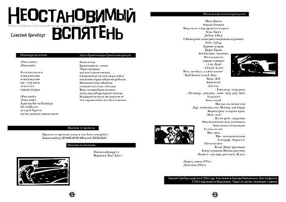
|
Савелий Гринберг
Неостановимый вспятень
Тексты из сборника стихотворений Осения. М.: Carte Blanche, 1997
Палиндро-детектив
Леша нашел
Лева навел
Я следом оделся
и мага шагами
и мага шагами
иду - суду суд и
лезу в узел
городу судорог
Лева нашел
Леша навел
А ругала бы ты балагура
Но он Но он
нем раб бармен
нагана довод и довода наган
Здесь бронтозавры бронтозавтракали
Была земля
Была планета - земля
Через вулканы
шагали чудо-великаны
Сверкающий гигант сверх-робот
отклинив страх отбросив робость
Инопланетные объекты
снимают на земле объедки
Века готовы были ползать
лишь для лабораторной пользы
И каждый вечер в звездном вече
тот спрошен был кто был отвечен
Прошли те времена
Прошли те времена, когда я мог быть оскорблен
Каким-нибудь ТРАМТАРАРАМ или САКРБЛЬО.
Поездка на Балканы
Поехал в Бухарест.
Вернулся. Бух! Арест.
Московским летом перевертни
Нога. Вагон.
Вокзал. Глазков.
Морозу не север древесен узором.
Тела - балет.
Дебош. Обед.
У Кима реки лавы дико окидывали керамику.
Роба. Забор.
Кармин и мрак.
Жара. Гараж.
Я и Наташа - шатания.
Но год вдогон
лирово говорил:
- А ну, Луна!
- Отказ? А кто?
Мол, автобаза, а забот валом!
- Ты б Балчуг учла б. Быт.
Боль. Лоб.
Блок колб.
Дач чад.
- Року укор - укор року.
- Но вздор... девовед... диво - вид, род, звон.
Теза газет.
Бонз озноб.
Мастак, но он кат сам.
Дар - томагавк, сом, Москва, гам отрад.
Киркегород - в дороге крик:
- Или - или!
- Я и не реву - уверения.
Она вот огулом: мол, уготовано:
Водила вниз инвалидов.
Селена не лес.
Мы - дым.
Мы - пелена нелепым.
Телеграф - Фаргелет.
Цензу кузнец.
Кони. Порт тропинок.
Конус и рынок. Иконы рисунок.
Индиго - лаз зорь, роз залог. И дни.
Мотель, летом 1959-го
Модосодом 1961-го
Савелий Гринберг родился в 1914 году. Участвовал в Бригаде Маяковского.
Был на фронте.
С 1973 года живет в Иерусалиме. Пишет по-русски, переводит с иврита.
|
|
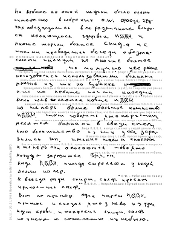
|
ИЗ ПОЛЕВЫХ НАБЛЮДЕНИЙ РАБОТНИКА ПО ОХВАТУ
На Арбате на этой недели было очень интересно в соброных O.W.* фокус
групах обсуждались все различные вопросы косающееся здоровья П.В.В.Н.**
и многие торчки боятся СПИДа и с такими проводились беседы о безопасности
инекций но многие боятся [нрзб], по тому-что уже ранше пользовались использоваными
боянами многие из них на Лубянке и [нрзб] кто на Арбате почти каждый день
появляются новые П.В.В.Н. но теперь болие большое количество П.В.В.Н. стали
говорить, что перестали менятся боянами в связи стем, что большинство из
них уже заразились геп. именно таким способом и теперь они опосаются тово,
что могут заразится ВИЧом.
Люди П.В.В.Н. иногда стреляют у людей деньги на гер.
И всегда рады спирт. салф. просят приносить салф.
Вот например один парень П.В.В.Н. пришол и скозал, что у нево из руки
идет кровь и попросил спирт. салф. но у меня к сожелению их небыло.
16.11.- 20.11.1998 Boomshanka Velicii Inspirity.UFO
|
|
|
Вернуться
|